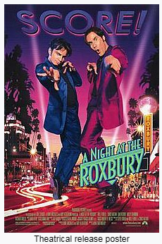

Sentinel
Great animated short using Blender Studio which is a free 3D Open
Source Program.
This movie has a moral lesson about seeking revenge.
see the movie
Night at The Roxbury
"A Night at the Roxbury is a 1998 American comedy film
based on a recurring sketch on television's long-running Saturday Night
Live called "The Roxbury Guys"."
(Quote from Wikipedia.org)
Schindeler's List

The film follows Oskar Schindler, a German industrialist who saved more
than a thousand mostly Polish–Jewish refugees from the Holocaust by
employing them in his factories during World War II.
(Quote from Wikipedia.org)